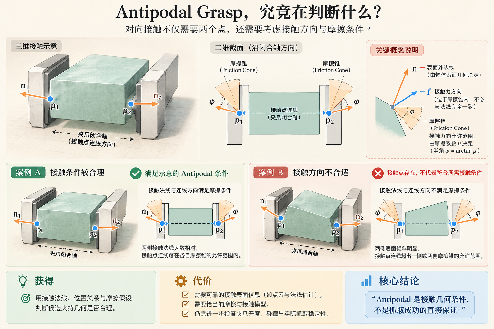
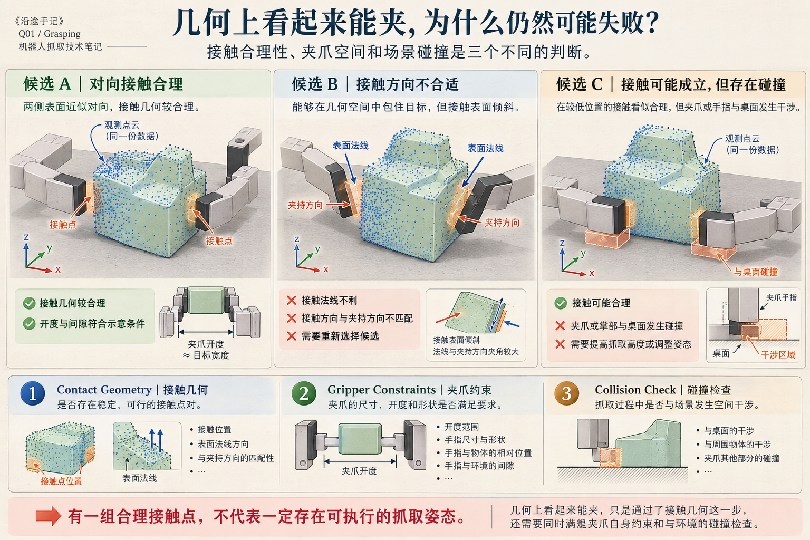
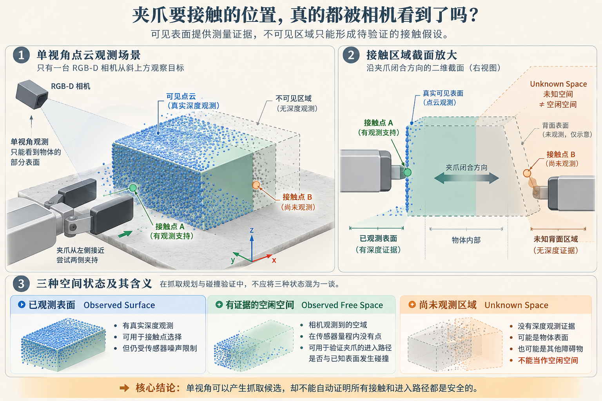

1988
Nguyen · Constructing Force-Closure Grasps
The International Journal of Robotics Research
研究根据物体几何直接构造力封闭（Force Closure）抓取，体现了接触位置、约束和抓取稳定性之间的数学关系。
获得的能力提供从接触几何到力封闭条件的经典框架。
代价与边界依赖接触和摩擦等模型；静态理论条件不意味着单视角点云能够准确知道所有真实接触。
从接触几何、Antipodal 到点云抓取候选：了解前人如何把局部表面、夹爪尺寸和候选评分组织起来，更重要的是分清几何上可夹、碰撞可行与真实稳定之间的差别。
已知一份单视角点云和固定两指夹爪，不一定非要恢复 Object Pose。可以直接利用局部接触表面、夹爪闭合方向和夹爪自身的几何产生抓取候选。但 Antipodal、Collision-free 与 Stable Grasp 并不互相等价。
候选接触点、法线、闭合方向，以及给定摩擦模型下的接触约束。
在局部几何附近采样夹爪位置、旋转、开度与接近路径。
检查已观测碰撞、工作台间隙、接触稳定性与规划可执行性。
我们不再为整个物体建立唯一参考坐标系，但需要对夹爪体积、局部接触和不可见空间作更细致的判断。
接触力学与基于局部点云的候选检测不是同一时期的一条替换链。建议记住三个有代表性的节点。
研究根据物体几何直接构造力封闭（Force Closure）抓取，体现了接触位置、约束和抓取稳定性之间的数学关系。
输入点云与机器人手几何，利用必要的局部几何条件采样手部姿态，再借助 Antipodal 条件构造训练标签，并使用学习式分类器筛选候选。
进一步研究直接从不完整感知点云检测可抓取姿态，改进候选评价和密集杂乱场景表现；仍然结合几何候选与学习式识别。
两指平行夹爪在局部抓取区域至少需要：抓取中心、闭合轴、接近方向、预定开度，以及手指与掌部的碰撞空间。这些量必须在同一坐标系中定义，并有可靠的几何来源。
可以从可见表面附近采样夹爪候选，计算夹爪闭合方向上是否存在潜在相对接触面，再判断手指可否在当前姿态下容纳目标局部结构。并不是每个候选都需要由一对已精确测得的接触点生成；可以先采样姿态再检测其内部的接触条件。
images/q01-contact-fig-01-antipodal-contact-geometry.png
对于理想的点接触与给定摩擦系数，两指接触是否能够产生所需的接触力，需要讨论法线方向与摩擦锥条件。工程里常用的 Antipodal 概念提供局部接触合理性的判别依据，但接触法线相反只是直观简化，真实条件还要考虑法向偏差、摩擦、接触模型与物体受力。
用接触方向与摩擦假设判断一组对向接触是否有力学上的合理性。
在指定接触模型下，可以抵抗任意外部扰动扳手的约束性质；不是单纯“看起来夹住”。
还需要夹爪进入、接触建立、摩擦真实值、物体运动、控制误差等条件。
单视角深度可以为前侧表面和已观测空闲空间提供证据；对背侧接触往往只是模型假设或待执行验证，不能作为确定的深度测量。
候选评价至少有三类互不等价的风险：接触方向不合适、夹爪与场景碰撞、关键接触位置恰好在不可见区域。
images/q01-contact-fig-02-grasp-candidate-collision-checks.png
表面法线与真实摩擦条件不准，会使候选的几何评分过于乐观。
夹爪张开能够覆盖目标，不意味着闭合或接近时不会与桌面相撞。
深度缺失不等于空闲。无法观测到的背面和遮挡体不能直接判为无碰撞。
images/q01-contact-fig-03-single-view-contact-observability.png
它并不比整体形状路线天然先进，只是在不同物体和观测条件下，将依赖从“形状完整”转向“局部接触足够可靠”。
| 当前条件 | 优先路线 | 获得的能力 | 付出的代价 |
|---|---|---|---|
| 规则瓶身、轴线稳 | 圆柱/轴线 + 几何夹爪候选 | 小规模、易解释的候选集 | 形状假设与接近方向选择 |
| 不规则但局部表面可靠 | 局部接触候选 | 不要求完整 Object Pose | 法线、接触评分及手部体积约束 |
| 贴地薄片、夹爪难进入 | 先分析可进入的接触/边缘 | 直接关注物理接触限制 | 有 Pose 也可能没有可行夹持空间 |
| 点云缺失严重、背面未知 | 候选 + 保守未知空间策略 | 避免把缺深度误判成自由空间 | 可能降低可用候选数，仍需执行验证 |
| 需要借助大量数据判断可抓性 | GPD 等学习式评分路线 | 可对几何候选学习排序 | 模型域迁移、数据和部署成本 |
形状明确时，基元很经济；局部结构足够但整体复杂时，接触候选可能更合适。两者也能组合：先用基元提供方向范围，再在局部点云上检验实际接触。
下面不是十几行就能可靠实现的完整抓取算法，只是清楚标出模块职责，防止把“候选产生”与“物理验证”混成一次判断。
def generate_grasps(points, normals, gripper, workspace):
poses = []
for region in sample_visible_local_regions(points, normals):
for closing, approach in local_direction_hypotheses(region):
pose = make_gripper_frame(region.center, closing, approach)
if pose is None:
continue # 两方向退化时不要硬造旋转矩阵
if not gripper_width_compatible(pose, region, gripper):
continue
if collides_with_observed_scene(pose, gripper, workspace):
continue
score = evaluate_contact_geometry(pose, region, normals)
poses.append((pose, score, "unknown-space-unverified"))
return sorted(poses, key=lambda item: item[1], reverse=True)
# 注意：所有函数需自行实现；对未知空间不能直接宣称安全。这三个代表性节点分别提供接触力学基础、几何候选与学习式候选判别、较完整的点云抓取检测路线。
无需先恢复完整 Object Pose，就可以直接从局部点云构造 Grasp Pose 候选；但得到候选只是开始，接触、夹爪体积、碰撞与不可见区域都需要单独判断。
Antipodal 是接触几何条件，GPD 是包含学习式筛选的系统路线；两者不能混为一个“纯几何算法”。